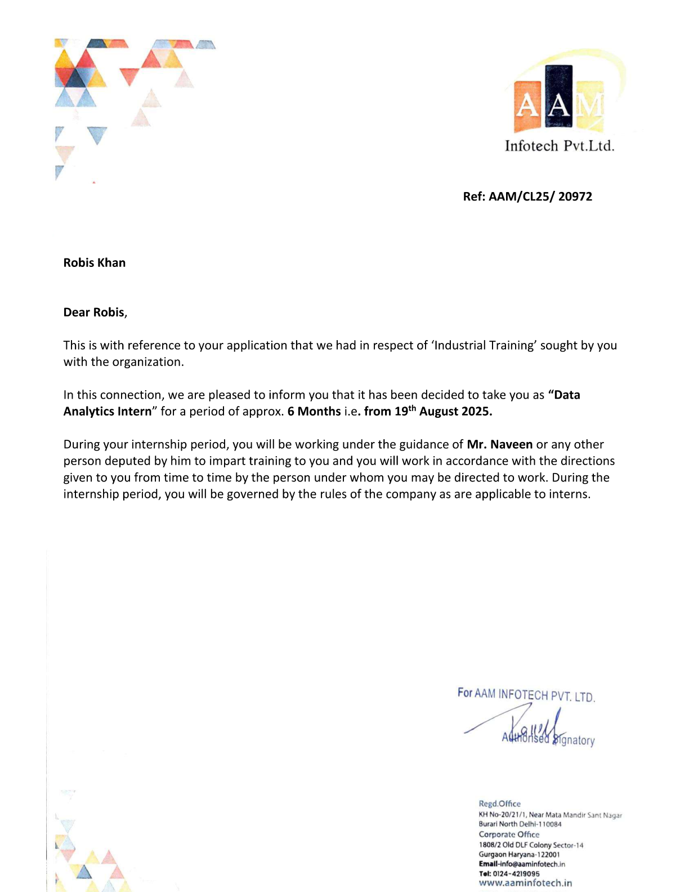

Data Analyst | Business Intelligence Enthusiast | SQL | Power BI | Python
View My Work View ResumeB.Tech Graduate (2025) with strong skills in SQL, Excel, Power BI and Python. Passionate about transforming raw data into actionable insights through data analysis, dashboard development and business intelligence reporting. Currently building hands-on experience through real-world projects and continuous learning.
Created an interactive Power BI dashboard to analyze sales performance, monthly growth, KPIs and top-performing products.
Used SQL queries to identify customer behavior patterns and segment customers based on purchasing activity.
Processed raw datasets using Excel and Python by removing duplicates, handling missing values and improving data quality.
Generated analytical reports and visualizations to support strategic business decisions.
AAM Infotech Pvt. Ltd.
6 Months Internship | August 2025
2021 - 2025 | BRCM College Of Engineering & Technology
Focused on analytics, reporting and dashboard creation.
6 Months Data Analytics Internship | August 2025
